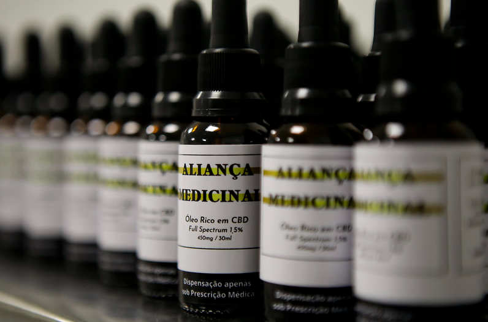
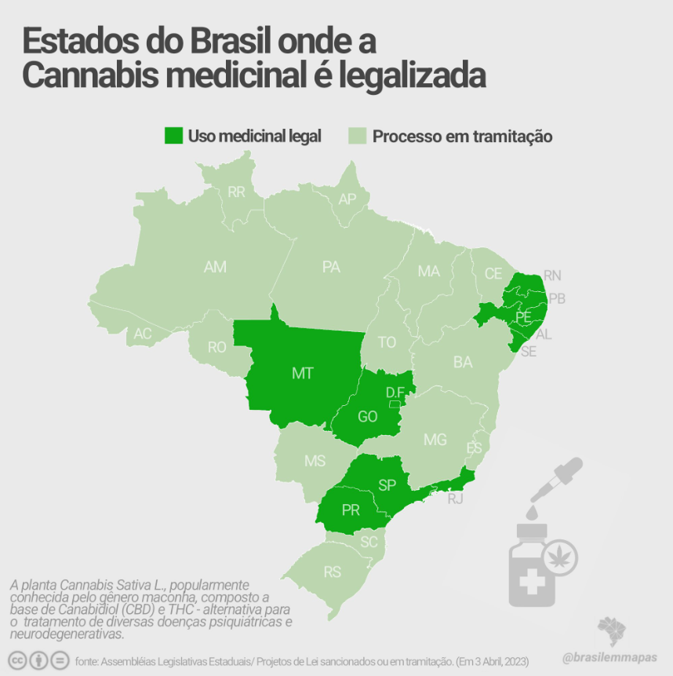

💊 Uso Medicinal da Cannabis
O uso medicinal da cannabis tem ganhado reconhecimento mundial por suas propriedades terapêuticas no tratamento de diversas doenças. A planta possui compostos ativos, como o THC e o CBD, que interagem com o sistema endocanabinoide do corpo humano, ajudando a regular funções como dor, sono, humor e apetite.
🩺 Principais indicações
A cannabis medicinal é indicada para uma ampla gama de condições, especialmente quando tratamentos convencionais não têm sido eficazes. Alguns dos principais usos incluem:
- 🧠 Epilepsia (incluindo síndromes como Dravet e Lennox-Gastaut)
- 🎗️ Câncer (alívio de náuseas e dores causadas pela quimioterapia)
- 🧘 Ansiedade e depressão
- 🦴 Doenças autoimunes e inflamatórias (como artrite)
- 🌙 Insônia e distúrbios do sono
- 🧬 Doenças neurodegenerativas (Parkinson, Alzheimer, esclerose múltipla)
🌿 Canabidiol (CBD) vs. Tetrahidrocanabinol (THC)
Dois dos principais compostos ativos da cannabis são:
- 💧 CBD: não psicoativo, com forte potencial terapêutico. Reduz ansiedade, inflamações e convulsões.
- 🔺 THC: psicoativo, mas eficaz para dores crônicas, falta de apetite e espasmos musculares.
🧪 Formas de uso
A cannabis medicinal pode ser administrada de diferentes formas, de acordo com a necessidade terapêutica e preferência do paciente:
- 💧 Óleo sublingual
- 🧁 Cápsulas e comestíveis
- 🌫️ Vaporização
- 🧴 Cremes tópicos
- 🧪 Tinturas e extratos concentrados
📊 Evidências científicas
Diversos estudos clínicos têm demonstrado os benefícios da cannabis medicinal:
- 🔬 Aprovada nos EUA para epilepsia refratária (Epidiolex – CBD puro)
- 📈 Estudos sobre alívio da dor crônica mostram melhora na qualidade de vida de pacientes
- 🧠 Pesquisas em andamento sobre uso em TEA (Transtorno do Espectro Autista)
⚖️ Situação legal no Brasil
No Brasil, a ANVISA permite desde 2015 a importação de produtos à base de CBD mediante prescrição médica. Em 2019, regulamentou o registro de produtos à base de cannabis em farmácias. Apesar disso, o cultivo doméstico para fins medicinais ainda requer autorização judicial.
📚 Curiosidades sobre o uso medicinal
- 👶 O primeiro caso de sucesso com CBD foi o de Charlotte Figi, uma criança com epilepsia grave.
- 🌍 Mais de 40 países já legalizaram a cannabis medicinal.
- ⚗️ Cientistas israelenses foram pioneiros na pesquisa com canabinoides nos anos 1960.
- 👨⚕️ Muitos médicos ainda têm pouco acesso à formação sobre o uso medicinal da planta.